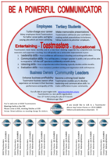

Toastmasters District 72 marketing resources
Table of Contents
- Club marketing information and guides
- How to recruit new club members
- How to hold a great open house
- 3 elements of successful club meetings
- What to include in your guest pack
- How to retain members
- How to conduct new member orientation
- Wow your visitors
- What your membership provides?
- Toastmasters features and benefits
- Toastmasters fact sheet
- Useful marketing links
- Marketing materials
Club marketing information and guides
How to recruit new club members
A guide from Toastmasters International on how to recruit new club members.
How to hold a great open house
Useful guidelines on how to plan and hold a open house/demonstration meeting.
3 elements of successful club meetings
A discussion of the 3 keys elements necessary for successful club meetings.
What to include in your guest pack
Must read: A list of guidelines on what to include in the your guest info/visitors pack.
How to retain members
Guidelines and plans on how to more effectively retain members for your club.
How to conduct new member orientation
Guidelines on how to conduct a new member orientation interview.
Wow your visitors
An article on how to WOW your visitors.
What your membership provides?
A useful document highlighting what members of Toastmasters get - add this to your visitors pack.
Toastmasters features and benefits
A list of features and benefits of Toastmasters - useful when planning your membership campaigns, or when talking to visiors.
Toastmasters fact sheet
Some useful facts about Toastmasters
Useful marketing links
Information on receiving funding for your club promotions
District 72 has funds available to support the events, projects or promotional activities that are designed to increase brand awareness and grow Toastmasters membership throughout New Zealand. Application for funds can be made by completing and submitting the D72 Promotional Funding Application Form, which can be found at the above link.
Sample press release templates
Give your club and/or district the publicity and recognition it deserves! Tell your local community about Toastmasters events, programs and member achievements. Use the press release templates at the above link, and submit them to your local newspaper.
TMI public relations guides
Several useful resources from Toastmasters International, including Public Relations training videos, logos, images and templates you can use, as well as guides on how to develop a PR calendar and program.
Toastmasters International Logos, Images and Templates
Official images, templates, stationery and videos from Toastmasters International that you can use in your marketing material.
Marketing materials
Toastmasters Official International Flyers
Use these flyers and posters to promote your Toastmasters club or event. For example, you can:
- Put them up at your local library, supermarket, or community centre
- Add a copy to your visitors pack, and give it to all club visitors
- Ask businesses in your local area whether you can put up the posters on their notice boards
- Provide the flyers and posters to your club members and ask them to distribute it to their family and friends.
All of the posters and flyers below are available to download in Microsoft Word format. Simply download the file, open it in Microsoft Word, and add your club or event details.
Because Communication Isn't Optional
 Poster for promoting your club meetings to business people - good for using at corporate clubs, or for putting up at businesses in your area.
Poster for promoting your club meetings to business people - good for using at corporate clubs, or for putting up at businesses in your area.
Next Big Presentation
 Poster for promoting your club meetings, targeting business people, or people who want to learn how to do better presentations.
Poster for promoting your club meetings, targeting business people, or people who want to learn how to do better presentations.
Communicate With Confidence
Poster for promoting your club meetings.
All About Toastmasters
 2 page flyer that provides information about how Toastmasters works. Add it to your visitors pack, or give it to your club members to distribute to their friends and family.
2 page flyer that provides information about how Toastmasters works. Add it to your visitors pack, or give it to your club members to distribute to their friends and family.
Blank Marketing Flyer
 A general flyer layout that you can use to "fill-in-the-blanks" to create your own flyer for your club's special event.
A general flyer layout that you can use to "fill-in-the-blanks" to create your own flyer for your club's special event.
Flyer Template 2
Another flyer layout with spaces to fill in your club details. This flyer contains specific fields for "When" and "Where". Use it for promoting club events.
Confidence - The Voice Of Leadership

 A 2-page flyer with quotes from famous Toastmasters, as well as more information about the Toastmasters program. Include it in your visitors packs, or give it away at your open meetings.
A 2-page flyer with quotes from famous Toastmasters, as well as more information about the Toastmasters program. Include it in your visitors packs, or give it away at your open meetings.
Find Your Voice

 A 2-page flyer with quotes from famous Toastmasters, as well as more information about the Toastmasters program. Include it in your visitors packs, or give it away at your open meetings.
A 2-page flyer with quotes from famous Toastmasters, as well as more information about the Toastmasters program. Include it in your visitors packs, or give it away at your open meetings.
Learned Skills
Poster with full color image and some text about the importance of public speaking. Use it to advertise your club meetings or special events.
Open House Flier
 Poster to advertise your club's open day or demonstration meeting.
Poster to advertise your club's open day or demonstration meeting.
Other flyers
Here's a big list of flyers and posters that you can use to promote your club. Either use these flyers as they are, or download them and make your own unique changes.
How to be a powerful communicator
 A poster detailing the benefits of Toastmasters for Employees, Students, Business Owners and Community Leders. Put it up at libraries or on notice boards to advertise your club.
Days of the week
A poster/flyer more suitable for an area or division, that allows you to provide Toastmaster meeting details for each day of the week.
Do you talk to people
 Poster that targets business people.
Poster that targets business people.
Do you talk to people - business
Poster that targets business people.
Do you talk to people - phone
Poster that targets business people.
Feeling tongue tied
A poster targeting people who struggle with public speaking.
Financial
Poster targeting business people - good for corporate clubs or putting up at businesses in your area.


Interview - girl
Poster that focuses on the benefits of Toastmasters to doing job interviews. Probably a good one to put up on notice boards near unemployment offices.
Interview - seated girl
 Poster that focuses on the benefits of Toastmasters to doing job interviews. Probably a good one to put up on notice boards near unemployment offices.
Poster that focuses on the benefits of Toastmasters to doing job interviews. Probably a good one to put up on notice boards near unemployment offices.
Make your point
 Poster targeting business people.
Poster targeting business people.
New to the area
Poster targeting people new to a area. Maybe put it in mailboxes of recently sold houses?

Bookmarks
These bookmarks are a good way of promoting your club, because they are useful to people and they tend to keep them around.
Ideas for using them:
- Ask your local library to distribute them for you
- Give them to visitors
- Ask your members to distribute them